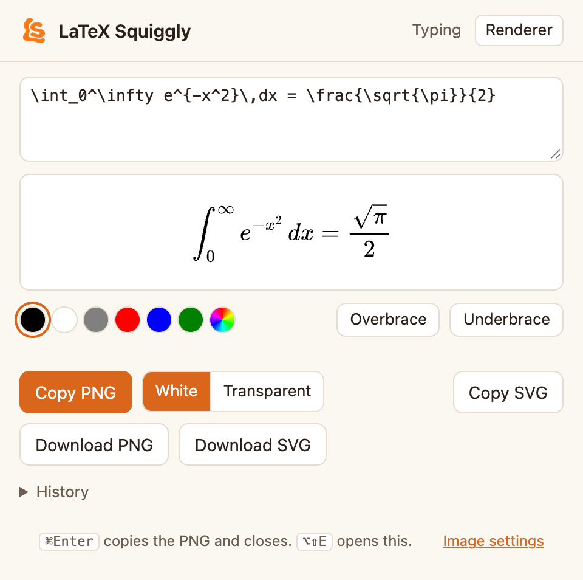

Guide
How to use LaTeX Squiggly
Type a LaTeX command where you would normally type, press space, and the command becomes the real character: \alpha becomes α, \to becomes →. It works the same way in the Mac app, the Windows app and the Chrome extension. Maths that plain text cannot hold, such as a stacked fraction, can be turned into an image instead.
Nothing you type is stored or sent anywhere. The privacy page says exactly what is read and when.
Video tutorials
Watch it work
Each step below has a short video, between 10 and 18 seconds long, made from the real app. New in Chrome: select any LaTeX on a page, right-click, and render it. The Chrome videos were made on a Mac, so they show ⌥⇧ and ⌘ where Windows and ChromeOS use Alt+Shift and Ctrl.
Everywhere
Mac and Windows
- The Mac app 0:18
- The Windows app 0:18
Chrome
- Writing maths in a chat 0:13
- Pausing it 0:12
Everywhere
The basics
- Type a command, then a space. The command is replaced with its character, right where you typed it. On the Mac and Windows, Tab works as well as space. Return never converts, so it cannot send a half-finished message.
- Put scripts inside dollars.
$x^2$gives x² and$a_1$gives a₁. The dollars say you meant maths, so an ordinaryx^2in a sentence is left alone. - Undo if you did not want it. ⌘Z or Ctrl+Z brings the command back.
- Read the notice when one appears. If something can only be approximated, such as
\frac{\alpha}{2}written as α∕2, or cannot be written in plain text at all, such as\vec{v}, a short note says what happened and why.
| You type | You get |
|---|---|
\alpha, \beta, \pi | α, β, π |
\to, \Rightarrow, \iff | →, ⇒, ⟺ |
\le, \ne, \approx, \in | ≤, ≠, ≈, ∈ |
\mathbb{R}, \infty, \sum | ℝ, ∞, ∑ |
\frac{1}{2}, \frac{3}{4} | ½, ¾ |
$x^2$, $a_{n+1}$ | x², aₙ₊₁ |
There are 202 symbols. Search them all on the home page, or in the app's or extension's settings.
It stays out of LaTeX editors. In Overleaf, TeX editors and code editors, \alpha has to stay \alpha, so LaTeX Squiggly does nothing there. You can add your own apps and sites to that list.
macOS 13 and later
The Mac app
Installing
- Download the disk image, open it, and drag LaTeX Squiggly onto Applications.
- Open it. The first time, macOS says it cannot be opened, because the app is signed but not notarized. Go to System Settings → Privacy & Security, scroll down, and click Open Anyway.
- An LS mark appears in the menu bar. Click it and grant the two permissions it asks for: Accessibility, to replace what you typed, and Input Monitoring, to notice you typing.
- Open Notes, type
\alphaand a space.
Using it
- Pause: click the LS mark and untick Enable conversion. The mark fades while it is off.
- Keep it out of an app: with that app in front, click the LS mark and choose Do not convert in ‹app›. Sites in your browser, such as Overleaf, are in Settings… → Exclusions.
- Find a symbol: Symbols… in the menu lists every command. Double-click one to copy its symbol.
- Make an image of an equation: press ⌃⌥⌘L from any app, or choose Render LaTeX as Image…. See Turning maths into an image.
Updating
Quit from the menu bar, drag the old app to the Trash, and install the new one. Your settings are kept. If macOS asks for the permissions again, first remove the old LaTeX Squiggly entries from both lists in System Settings → Privacy & Security. Left in place, they stay ticked but do nothing.
Windows 10 and later, beta
The Windows app
Installing
- Download the .exe and double-click it. There is no installer and it needs no admin rights.
- Windows may say Windows protected your PC, because the app is not code-signed. Click More info, then Run anyway.
- An LS mark appears in the system tray, near the clock. Open Notepad, type
\alphaand a space.
Using it
- Pause: right-click the tray mark and untick Convert LaTeX as I type.
- Keep it out of an app: with that app in front, right-click the tray mark and choose Do not convert in ‹app›.
- Settings and symbols: Settings and Symbols… in the tray menu. Open at login starts it with Windows.
- If it goes quiet: the tray menu says which rule it is following, and Copy diagnostics puts a summary on the clipboard for a bug report.
The Windows app also turns maths into an image: see below. It needs the Microsoft Edge WebView2 Runtime, which Windows 11 has and Windows 10 gets through updates.
Chrome, Edge, Brave and other Chromium browsers
The Chrome extension
Installing
- Add LaTeX Squiggly from the Chrome Web Store. A welcome page opens with a practice box to try it in.
- Pin it: click the puzzle piece in the toolbar, then the pin next to LaTeX Squiggly.
- Reload any tab that was already open. The extension only starts in pages loaded after it was installed.
- Type
\alphaand a space in any text box on a web page.
Using it
- Render LaTeX you see on a page: select it, right-click, and choose Render selection as image. It opens in the renderer, ready to copy as a picture.
- Pause: click the toolbar icon and switch off Convert as I type, or press Alt+Shift+L (⌥⇧L on a Mac) on any page. The icon turns grey wherever it is not converting.
- Keep it off a site: click the toolbar icon on that site and switch off Convert on this site. Overleaf and other LaTeX sites are off already.
- Google Docs: it works in documents. If Docs capitalises a Greek letter at the start of a sentence, turn off Tools → Preferences → Automatically capitalize words in Docs.
- Settings and symbols: right-click the toolbar icon and choose Options.
- Make an image of an equation: the toolbar icon's Renderer tab, or Alt+Shift+E. See below.
Only space finishes a command in the browser, because Tab moves between fields on a web page.
Mac app, Windows app and Chrome extension
Turning maths into an image
Fractions, matrices and sums with limits have no plain-text form. The renderer draws them as a picture you can paste into chats, slides, documents and emails.
Quickest in Chrome: select, right-click, render
Select LaTeX on any page, right-click, and choose Render selection as image. The renderer opens with it already drawn, even if it is wrapped in dollar signs. Click Copy PNG and paste it wherever you are.

- Open it.
Mac: ⌃⌥⌘L from any app, or Render LaTeX as Image… in the menu bar.
Windows: Win+Alt+L from any app, or Render LaTeX as Image... in the tray menu.
Chrome: the toolbar icon's Renderer tab, or Alt+Shift+E. Or select LaTeX on a page, right-click, and choose Render selection as image. - Type the LaTeX, without dollars. The preview updates as you type, and a list of commands appears when you type
\. - Click Copy PNG, or press ⌘Enter (Ctrl+Enter on Windows). That copies the image and closes the window.
- Paste it wherever you were, with ⌘V or Ctrl+V.
Options
- White or Transparent sets the background. White is safer: black text on a transparent background disappears in apps using dark mode.
- The colour dots change the colour of the selected part, or of everything if nothing is selected.
- Overbrace and Underbrace put a brace and a label over or under the selected part.
- History keeps your last 10 equations. Click one to load it again.
- Image settings sets the scale, from 1× to 4×, and Your commands: definitions such as
\newcommand{\R}{\mathbb{R}}that are added to every image, so you can type\Rfor ℝ.
PNG or SVG? Use PNG. It is an ordinary picture and pastes everywhere. SVG is the same image stored as drawing instructions: it stays sharp at any size, but most apps paste it as a block of code. It is for design tools and web pages.
On the Mac, a copied PNG pastes at the size it was previewed and stays sharp. In Chrome, a browser cannot tell the clipboard the image's size, so a 3× image may paste larger than expected. Resize it after pasting, or lower the scale.
Help
If nothing happens
- Is it switched on? A faded or grey icon means it is paused or the app or site is excluded. The menu or popup says which.
- Did you press space? A command only converts when it is finished with a space (or Tab, on the desktop).
- Chrome: reload the tab. Pages open before the extension was installed or updated do not have it yet.
- Mac: check both Accessibility and Input Monitoring in System Settings → Privacy & Security. After an update, remove the old entries and grant them again.
- Scripts: put them in dollars.
x^2on its own is left alone,$x^2$converts. - Shortcut does nothing: another app may already use it. In Chrome, change it at
chrome://extensions/shortcuts. On the Mac, the menu item always works.
Still stuck, or found a symbol that should be there? Open a GitHub issue.